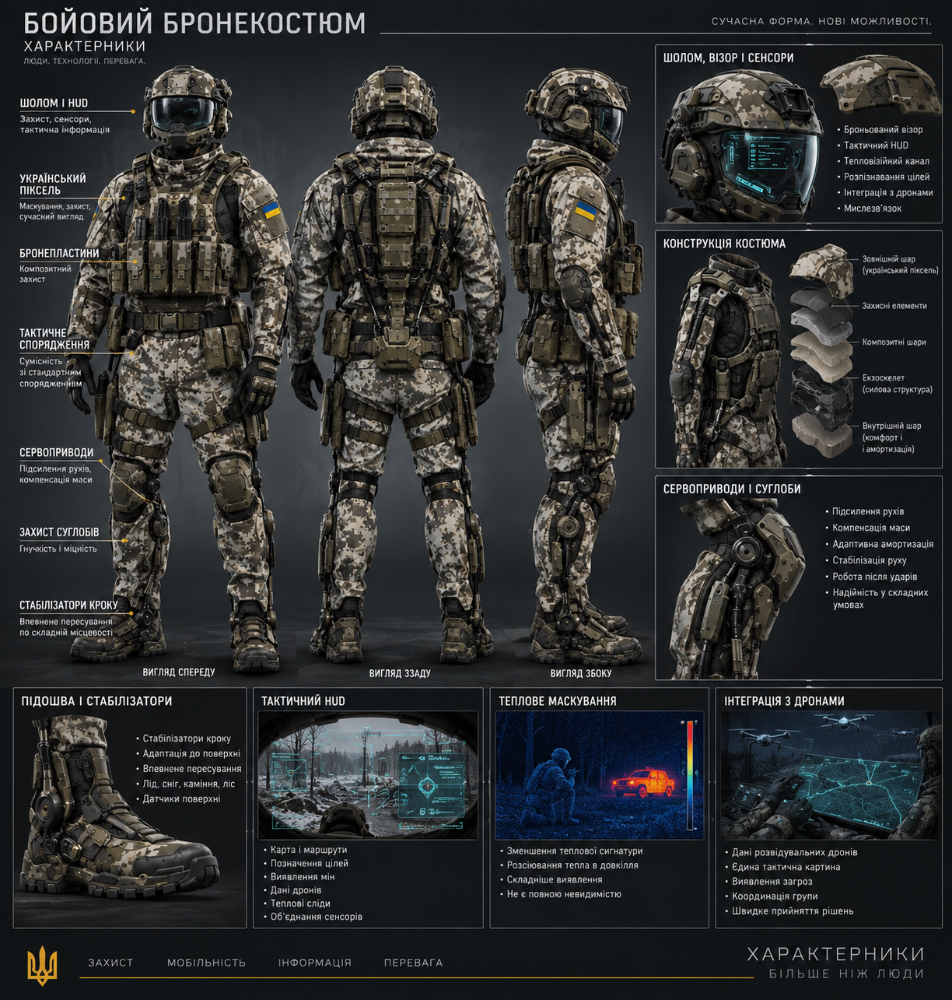

UNIVERSE REFERENCE
Technology
Technologies that have their own descriptions in the world of Kharakternyky. No placeholder lists or invented entries—only material that can be explored.
CATALOGUE
Documented technologies
Each card leads to a dedicated page describing the technology, how it works, its characteristics and its place in the story world.

Needle Launcher
A compact combat system using high-velocity metal needles and modular weaponry.
EXPLORE →
Combat Exosuit
A combat system combining armour, servos, stabilisation, sensors and a tactical interface.
EXPLORE →
Chimera
An active multispectral camouflage system designed to make detection and stable target tracking more difficult.
EXPLORE →Automated Turrets
An automated defensive system combining sensors, remote control, thought-link technology and serial production.
EXPLORE →
City-Path
A vast linear infrastructure combining housing, transport, manufacturing, energy and protection.
EXPLORE →